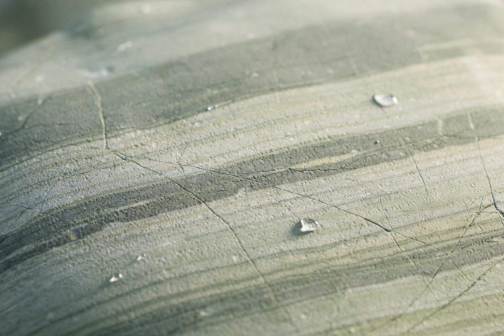

天然砥石の「硬度」表記の読み方 ― 店ごとに違うLv表記の正体

天然砥石を探し始めると、早い段階で一つの壁にぶつかります。「Lv4.5」と書く店もあれば、「硬度8」と書く店もあり、星の数で示す店もある。同じくらいの硬さのはずなのに、数字がまったく揃っていないのです。これは各店がいい加減なのではなく、天然砥石の硬度には、もともと工業規格のような統一基準が存在しないためです。
なぜ統一表記がないのか
人造砥石には番手（粒度）の規格がありますが、天然砥石は山から掘り出された石そのもの。一枚ごとに成分も締まり具合も違います。硬さを測る公的な物差しがない以上、販売者は自分の経験に基づく独自の物差しで表すしかありません。結果として、ある店の「Lv4」は別の店の「Lv4.5」に相当する、ということが普通に起こります。
つまり硬度表記は、「その店の中での相対的な目安」として読むのが正解です。店をまたいで数字だけを比べても、石の良し悪しは判断できません。
硬さで何が変わるのか
- 硬い石（高Lv）：研磨速度は遅くなる代わりに、刃先を細かく詰める最終仕上げに向きます。カミソリや柳刃の仕上げに好まれます。
- 軟らかい石（低Lv）：砥泥がよく出て研磨速度が速く、刃物に優しい。霞仕上げの地肌作りや、大工道具の刃付けに向きます。
- 中間の石：速さと細かさのバランスが取れ、日常の仕上げ砥として最も扱いやすい帯域です。
「硬い＝良い」ではありません。用途と、研ぐ人の技量に合った硬さを選ぶことが大切です。
研屋の表示について
私たちは、取り扱うすべての石を実際に刃物で研いでテストし、硬度を Lv1〜5+ の統一表記 に直して表示しています。あわせて、研ぎ汁の出方や刃の当たり方といったテストの記録、推定の粒度帯、毒筋（刃を傷つける有害な筋）の有無も公開します。数字そのものより、「テストした人間がどう感じたか」を言葉で残すこと。それが、店を横断して石を比べられる唯一の方法だと考えています。
砥石データベースでは、鉱山・層・硬度・価格帯で横断検索ができます。硬度の帯域から石を探したい方は、そちらもあわせてご覧ください。